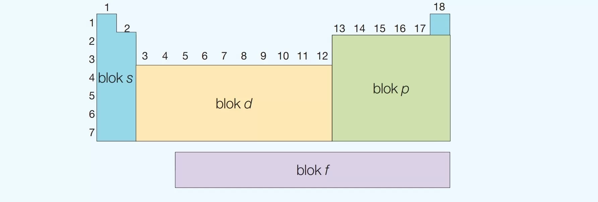

Atom:
składa się z dodatnio naładowanego jądra atomowego
i ujemnie naładowanych elektronów. Jądro atomowe składa się
z nukleonów (protonów - p+ oraz
neutronów - n-).
Z - liczba atomowa
E - symbol pierwiastka
A - liczba masowa
Z = liczba p
A = liczba p + liczba n
liczba n = A - Z
Elektony:
są rozmieszczone w okół jądra atomu w powłokach elektronowych oznaczonych
literami:
K2, L8,
M18, N32,
O50, P72,
Q98
K: 1s2
L: 2s22p6
M: 3s23p63d10
N: 4s24p64d104f14
O: 5s25p65d105f145g18
P: 6s26p66d106f146g186h22
Q: 7s27p67d107f147g187h227h26
W przypadku kationów:
od masy atomowej, odejmujemy ładunek jonu →
3Li 3Li+
3e - 1e = 2e
3Li+ : 1s2
W przypadku anionów:
od liczby atomowej dodaje się elektrony odpowiadające za ładunek anionu: →
17Cl 17Cl-
17e + 1e = 18e
17Cl- : 1s22s22p63s23p6

Elektroujemność:
to zdolność atomu danego pierwiastka do przyciągania
elektronów tworzących wiązanie.
Wiązanie chemiczne niespolaryzowane:
wiązanie poowstałe w wyniku uwspólnienia się
elektronów walencyjnych, łączących się atomów,
gdy różnica elektroujemności jest równa 0.
Wiązanie chemiczne spolaryzowane:
wiązanie chemiczne powstałe w skutek uwspólnienia
się elektronów walencyjnych, łączących się atomów
różnych pierwiastków chemicznych i przesunięcia pary
elektronowej w stronę atomu pierwiastka chemicznego
o większej elektroujemności, gdy różnica elektroujemności
jest mniejsza niż 1.7.
Wiązanie kordynacyjne:
odmiania wiązania kowalencyjnego spolaryzowanego. Powstaje
podczas uwspólnienia się par elektronów, pochodzi tylko od
jednego z atomów tworzących wiązania chemiczne.
wiązania kowalencyjne:
- pojedyncze
- podwójne
- potrójne
pojedyncze: σ
podwójne: σ + π
potrójne: σ + 2π
Wiązanie jonowe:
wiązanie powstałe w wyniku wzajemnego przyciągania się siłami
elektrostatycznymi jonóœ o przeciwnych ładunkach. Wiązanie to tworzy się
między jonami powstałymi na wskutek trwałego przeniesienia elektronów
z atomu metalu na atom niemetalu, gdy różnica elektroujemności wynosi 1.7
Ca2+02-: różnica
elektroujemności → 3.5 - 1.0 = 2.5 2.5 > 1.7
To wiązanie powstaje w metalach i ich stopach. To siły o bardzo krótkim
zasięgu związanego z przyciąganiem i odpychaniem cząsteczek polarnych
(dipoli).